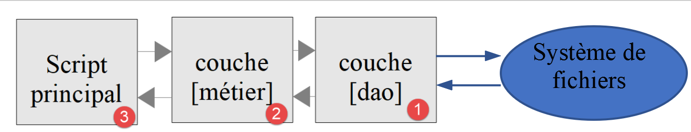

11. Exercice d'application – version 4
L'application de calcul de l'impôt va maintenant implémenter la structure en couches suivante :

Nous allons reprendre les éléments de la version 3 en les modifiant pour les adapter à la nouvelle architecture de l'application. On appelle cela du « refactoring » (réusinage du code). Nous supposons ici que les données nécessaires à l'application sont dans des fichiers texte. C'est la couche [dao] qui va s'occuper des échanges avec ces fichiers.
11.1. Arborescence des scripts
La version 4 est dans le dossier [scripts-console/impots/version-04] :
Le dossier [Tests] contient les tests automatisés de la version 4, que nous présenterons en fin de chapitre.
11.2. Objets échangés entre couches
Nous gardons certains éléments de la version 3, à l'identique :
- l'exception [ExceptionImpots] est l'exception que lancera la couche [dao] lorsqu'elle rencontrera un problème soit avec l'accès aux données soit avec la nature des données (données incorrectes) ;
- la classe [Utilitaires] rassemble des méthodes utiles à la gestion des fichiers texte (ici une seule méthode, [cutNewLineChar]) ;
- la classe [readonly] [TaxAdminData] encapsule les données de l'administration fiscale. On l'obtient avec la méthode statique [TaxAdminData::fromJsonFile($fichier)] (ou [TaxAdminData::fromArray($tableau)]), qui vérifie la validité des données et lance une [ExceptionImpots] si elles sont incorrectes .
Nous ajoutons une nouvelle classe [TaxPayerData] qui encapsule les données d'un contribuable et les résultats du calcul de son impôt [TaxPayerData.php] :
Commentaires
- ligne 9 : comme [TaxAdminData], la classe [TaxPayerData] est immuable : ses objets passent d'une couche à l'autre sans risque d'être modifiés en chemin ;
- lignes 13-15 : les données du contribuable nécessaires au calcul de son impôt ;
- lignes 17-21 : les résultats du calcul de l'impôt. Ils sont de type nullable ([?int], [?float]) avec la valeur par défaut [null] : un objet [TaxPayerData] est d'abord créé par la couche [dao] avec les seules données du contribuable [new TaxPayerData("oui", 2, 55555)], l'impôt n'étant pas encore calculé. Les noms des attributs sont ceux des clés JSON du fichier des résultats de la version 3 : le fichier [resultats.txt] gardera ainsi le même format ;
- lignes 27-36 : l'objet étant immuable, on ne peut pas lui ajouter les résultats du calcul. La méthode [avecRésultats] rend une copie de l'objet complétée par les résultats. Elle utilise l'opérateur [clone] de PHP 8.5, qui accepte en second paramètre un tableau des attributs à modifier dans la copie (voir le chapitre sur les classes). Le cours PHP 7 utilisait un objet modifiable avec huit getters et huit setters ;
- lignes 39-42 : la méthode [__toString] rend la chaîne JSON de l'objet. Elle servira à écrire le fichier des résultats .
11.3. La couche [dao]
Nous nous intéressons ici à la couche [1] de notre application :
11.3.1. L'interface [InterfaceDao]
L'interface de la couche [dao] sera la suivante [InterfaceDao.php] :
Commentaires
- le cahier des charges est ici le suivant :
- les données des contribuables sont dans un fichier texte ;
- on enregistre les résultats du calcul de l'impôt dans un fichier texte ;
- on enregistre les éventuelles erreurs dans un fichier texte ;
- on ne sait pas sous quelle forme sont disponibles les données de l'administration fiscale. Pour chaque nouvelle forme, l'interface [InterfaceDao] devra être implémentée par une nouvelle classe ;
- les méthodes de l'interface qui rencontrent une erreur irrécupérable lors de l'accès aux données doivent lancer une exception de type [ExceptionImpots] ;
- ligne 15 : la méthode qui permet d'obtenir les données des contribuables [statut marital, nombre d'enfants, salaire annuel] :
- le 1er paramètre est le nom du fichier texte dans lequel se trouvent ces données ;
- le second paramètre est le nom du fichier texte dans lequel enregistrer les éventuelles erreurs rencontrées ;
- ligne 14 : le type [array] ne dit pas ce que contient le tableau. Le commentaire de documentation [/** @return TaxPayerData[] */] (syntaxe PHPDoc) précise qu'il s'agit d'un tableau d'objets [TaxPayerData]. PHP l'ignore, mais l'extension [PHP Intelephense] de [VS Code] l'utilise : elle connaît alors le type des éléments du tableau et peut proposer leurs attributs à la saisie ;
- ligne 18 : la méthode qui permet d'obtenir les données de l'administration fiscale. On ne lui passe aucun paramètre car on ne sait pas comment elles sont stockées ;
- ligne 22 : la méthode qui permet d'enregistrer les résultats du calcul de l'impôt dans un fichier texte dont on passe le nom en paramètre .
Lorsqu'on écrit l'interface [InterfaceDao], on sait qu'il y aura différentes façons d'écrire la méthode [getTaxAdminData] selon la façon dont seront stockées les données de l'administration fiscale. L'interface [InterfaceDao] sera donc implémentée par différentes classes, chacune s'occupant d'un stockage particulier de ces données (fichier JSON, base de données, service web). Ces classes auront néanmoins un code commun, celui de l'implémentation des méthodes [getTaxPayersData] et [saveResults]. Nous avons vu au chapitre sur les traits que ce cas d'utilisation peut être implémenté de deux façons :
- on crée une classe abstraite C qui regroupe le code commun aux classes dérivées. La classe C implémente l'interface I mais certaines méthodes, qui doivent être définies dans les classes dérivées, sont déclarées abstraites dans la classe C, qui est donc elle-même abstraite. On crée ensuite des classes C1 et C2 dérivées de C qui implémentent chacune à leur manière les méthodes abstraites de leur classe parent C ;
- on crée un trait T quasi identique à la classe abstraite C de la solution précédente. Ce trait n'implémente pas l'interface I car syntaxiquement il ne le peut pas. On crée ensuite des classes C1 et C2 implémentant l'interface I et utilisant le trait T. Il ne reste à ces classes qu'à implémenter les méthodes de l'interface I non implémentées par le trait T qu'elles importent .
Pour l'exemple, nous allons utiliser ici un trait [TraitDao]. La version 3 utilisait une classe abstraite.
11.3.2. Le trait [TraitDao]
Le code du trait [TraitDao] est le suivant [TraitDao.php] :
Commentaires
- ligne 9 : nous définissons ici un trait et non une classe ;
- ligne 12 : une constante de trait (PHP 8.2), typée (PHP 8.3) : le séparateur des champs d'une ligne du fichier des contribuables. Elle devient une constante de la classe qui utilise le trait et s'utilise avec la notation [self::SEPARATEUR] ;
- ligne 15 : depuis PHP 8.3, l'attribut [#[\Override]] est accepté sur une méthode de trait. Il est vérifié dans la classe qui utilise le trait : ici la méthode doit correspondre à une méthode de l'interface [InterfaceDao] implémentée par cette classe ;
- lignes 16-74 : la méthode [getTaxPayersData] implémente la méthode de même nom de l'interface [InterfaceDao]. Elle récupère dans le fichier texte nommé [$taxPayersFilename] les données des contribuables [statut marital, nombre d'enfants, salaire annuel]. Elle les rend sous la forme d'un tableau [$taxPayersData] d'éléments de type [TaxPayerData] (ligne 58) ;
- la méthode [getTaxPayersData] est très semblable à la méthode [AbstractBaseImpots::executeBatchImpots] de la version 3, avec les différences suivantes :
- la méthode [getTaxPayersData] ne fait que récupérer les données des contribuables. Elle ne fait pas de calcul d'impôt : c'est le rôle de la couche [métier] ;
- comme le faisait la méthode [executeBatchImpots], elle signale les lignes erronées. Ici, les erreurs sont d'abord mémorisées dans un tableau [$errors], tableau qui est enregistré dans un fichier texte à la fin du traitement (ligne 71). Selon les cas, il est vide ou non. Une ligne erronée ne provoque plus d'exception : c'est au code appelant de consulter le fichier des erreurs ;
- dans le cas d'erreur irrécupérable, une exception de type [ExceptionImpots] est lancée (ligne 25, ligne 64) ;
- lignes 23-26 : le fichier est ouvert avant la structure [try / finally]. Si l'ouverture échoue, on lance une exception et il n'y a rien à fermer. Si elle réussit, la clause [finally] (lignes 66-69) garantit la fermeture du fichier, qu'une exception se produise ou non. Cette organisation évite le test « le fichier a-t-il été ouvert ? » de la version 3 ;
- lignes 62-65 : on notera le traitement fait à la sortie de la boucle de lecture. La fonction [fgets] a l'inconvénient de rendre [false] aussi bien lorsque la lecture a rencontré la fin du fichier que lorsque la lecture n'a pu aboutir à cause d'une erreur. Pour différencier les deux cas, on teste si on est arrivé à la fin du fichier avec la fonction [feof]. Si ce n'est pas le cas, c'est qu'une erreur s'est produite et on lance alors une exception ;
- lignes 78-82 : implémentation de la méthode [saveResults] de l'interface [InterfaceDao]. Chaque élément [TaxPayerData] du tableau est transformé en chaîne de caractères par la fonction [strval], qui appelle la méthode [__toString] de l'objet : on obtient sa chaîne JSON. [strval(...)] désigne la fonction [strval] elle-même (callable de première classe, PHP 8.1) ;
- lignes 85-92 : la méthode privée [saveLines] enregistre un tableau de lignes dans un fichier texte, chaque ligne étant terminée par la marque de fin de ligne \n ;
- ligne 89 : la fonction PHP [file_put_contents] enregistre une chaîne de caractères dans un fichier texte. Elle s'occupe d'ouvrir le fichier, d'écrire la chaîne dedans et de fermer le fichier. Elle rend [false] si une erreur s'est produite. Dans ce cas, PHP émet également un avertissement. L'opérateur [@] supprime cet avertissement : l'erreur est signalée par l'exception lancée à la ligne suivante, avec un message plus clair .
Le trait [TraitDao] a implémenté deux des méthodes de l'interface [InterfaceDao], [getTaxPayersData] et [saveResults]. Il nous reste à implémenter la méthode [getTaxAdminData] qui récupère les données de l'administration fiscale.
11.3.3. La classe [DaoImpotsWithTaxAdminDataInJsonFile]
La classe [DaoImpotsWithTaxAdminDataInJsonFile] implémente l'interface [InterfaceDao] de la façon suivante :
Commentaires
- ligne 9 : la classe [DaoImpotsWithTaxAdminDataInJsonFile] implémente l'interface [InterfaceDao] ;
- ligne 12 : la classe utilise le trait [TraitDao] qui, on le sait, implémente les méthodes [getTaxPayersData] et [saveResults] de l'interface [InterfaceDao]. Il ne reste donc plus à la classe qu'à implémenter la méthode [getTaxAdminData] qui récupère les données de l'administration fiscale ;
- ligne 15 : l'attribut de type [TaxAdminData] que rend la méthode [getTaxAdminData]. Il est initialisé par le constructeur ;
- ligne 21 : les données de l'administration fiscale sont lues dans le fichier JSON. Si le fichier est absent ou incorrect, une exception [ExceptionImpots] remonte au code appelant .
Nous en avons terminé avec la couche [dao] de notre application : nous avons une classe qui implémente totalement l'interface [InterfaceDao] que nous nous sommes imposée. Nous pouvons désormais passer à la couche [métier].
11.4. La couche [métier]
Nous allons maintenant implémenter la couche [2] de notre architecture :

11.4.1. L'interface [InterfaceMetier]
L'interface de la couche [métier] sera la suivante [InterfaceMetier.php] :
Commentaires
- ligne 13 : la couche [métier] sait calculer le montant de l'impôt d'un contribuable particulier pourvu qu'on lui donne les informations suivantes : statut marital, nombre d'enfants, salaire annuel. La méthode [calculerImpot] est une méthode purement « métier » : elle ne se préoccupe pas d'où viennent les données qu'elle utilise. Elle n'utilise pas la couche [dao] aussi ne lance-t-elle pas d'exception ;
- ligne 17 : la couche [métier] peut aussi calculer le montant de l'impôt d'un ensemble de contribuables dont les données sont rassemblées dans le fichier texte nommé [$taxPayersFileName]. Elle met les résultats dans le fichier texte nommé [$resultsFileName]. Les erreurs non fatales sont enregistrées dans le fichier texte nommé [$errorsFileName]. La méthode [executeBatchImpots] doit s'adresser à la couche [dao] qui s'occupe des accès au système de fichiers. Des exceptions peuvent alors remonter de la couche [dao] : la méthode [executeBatchImpots] ne les interceptera pas, elle les laissera remonter au script principal .
11.4.2. La classe [Metier]
La classe [Metier] implémente l'interface [InterfaceMetier] de la façon suivante :
Commentaires
- ligne 9 : la classe [Metier] implémente l'interface [InterfaceMetier], c'est-à-dire les méthodes [calculerImpot] et [executeBatchImpots] ;
- ligne 12 : l'objet de type [TaxAdminData] qui encapsule les données de l'administration fiscale. Ces données sont nécessaires à la méthode métier [calculerImpot] ;
- lignes 15-21 : le constructeur initialise les deux attributs de la classe :
- l'attribut [$dao], une référence sur la couche [dao], est initialisé par promotion du paramètre du constructeur. Il en faut obligatoirement une pour que la couche [métier] sache à qui s'adresser lorsqu'elle veut des données externes. On notera que le type de ce paramètre est celui de l'interface [InterfaceDao], permettant ainsi à la classe [Metier] de travailler avec n'importe quelle classe implémentant cette interface. Le cours PHP 7 offrait en plus un setter [setDao] : il disparaît, la couche [dao] étant injectée une fois pour toutes par le constructeur ;
- l'attribut [$taxAdminData] est initialisé en faisant appel à la méthode [getTaxAdminData] de la couche [dao] ;
- on en conclut que lorsque les méthodes [calculerImpot] et [executeBatchImpots] s'exécutent, les deux attributs [$dao] et [$taxAdminData] sont initialisés. Le test [$this->taxAdminData ??= $this->getTaxAdminData()] de la version 3 n'a plus lieu d'être ;
- lignes 26-77 : ce code est celui de la méthode [AbstractBaseImpots::calculerImpot] de la version 3. Il en est de même pour les méthodes privées [calculerImpot2], [getRevenuImposable], [getDecote] et [getRéduction], qui ne sont pas reproduites ici .
La méthode [Metier::executeBatchImpots] est la suivante :
Commentaires
- ligne 188 : la méthode doit appeler de façon répétée la méthode [calculerImpot] pour chacun des contribuables trouvés dans le fichier texte nommé [$taxPayersFileName] et mettre les résultats dans le fichier texte nommé [$resultsFileName]. Les erreurs non fatales rencontrées sont enregistrées dans le fichier texte nommé [$errorsFileName]. La méthode ne lance pas d'exception elle-même mais laisse remonter celles que la couche [dao] lance ;
- ligne 192 : les données des contribuables sont demandées à la couche [dao]. Celle-ci rend un tableau d'éléments de type [TaxPayerData]. S'il se produit une exception ici, comme elle n'est pas interceptée par un [catch], elle remonte automatiquement au code appelant et la suite de la méthode n'est pas exécutée ;
- lignes 194-199 : la fonction [array_map] applique une fonction à chacun des éléments du tableau [$taxPayersData] et rend le tableau des résultats. La fonction appliquée est une fonction fléchée qui calcule l'impôt du contribuable [$taxPayerData] et rend une copie de [$taxPayerData] complétée par les résultats du calcul (ligne 195). On remarquera que la fonction fléchée utilise [$this] : une fonction fléchée capture automatiquement les variables de son contexte, [$this] compris ;
- ligne 201 : une fois l'impôt calculé pour tous les contribuables, les résultats sont enregistrés dans un fichier texte. C'est la couche [dao] qui fait ce travail .
En général, la couche [métier] est assez simple à écrire car elle s'adresse à la couche [dao] qui, elle, gère l'accès aux données avec la gestion des erreurs qui va avec.
11.5. Le script principal
On écrit maintenant le script de la couche [3] de notre architecture :
Le script principal est le suivant [main.php] :
Commentaires
- lignes 10-18 : chargement des classes, interfaces et trait de l'application. Un trait doit être chargé avant la classe qui l'utilise ;
- ligne 21 : le nom du fichier des données contribuables ;
- ligne 22 : le nom du fichier des résultats ;
- ligne 23 : le nom du fichier des erreurs ;
- ligne 24 : le nom du fichier JSON contenant les données de l'administration fiscale ;
- ligne 28 : création de la couche [dao] ;
- ligne 30 : création de la couche [métier] s'appuyant sur cette couche [dao] ;
- ligne 32 : exécution de la méthode [executeBatchImpots] de la couche [métier] ;
- lignes 34-37 : on a vu que les couches [dao] et [métier] pouvaient faire remonter des exceptions. Elles sont interceptées ici .
11.6. Tests visuels
11.6.1. Test n° 1
On exécute le script [main.php] dans un terminal ouvert dans le dossier [version-04] :
Avec le fichier des contribuables [taxpayersdata.txt] de la version 3 :
on obtient le fichier des erreurs [errors.txt] suivant :
et le fichier des résultats [resultats.txt] suivant :
Ce sont les résultats de la version 3.
11.6.2. Test n° 2
Dans le script principal, on met pour le fichier des contribuables un nom de fichier qui n'existe pas :
Les résultats obtenus à la console sont alors les suivants :
On n'obtient que le message de l'exception lancée par la couche [dao]. Dans le cours PHP 7, la fonction [fopen] était appelée sur le fichier inexistant : l'interpréteur PHP affichait alors un avertissement avant le message de l'exception :
Le cours PHP 7 faisait disparaître ce message en demandant à PHP de ne pas afficher les erreurs avec l'instruction [ini_set("display_errors", "0")]. C'est la bonne configuration d'un serveur en production (les erreurs sont alors écrites dans un fichier de logs), mais pendant le développement il faut voir tous les messages de PHP. Nous préférons donc ne pas provoquer l'avertissement : la couche [dao] vérifie avec la fonction [is_readable] que le fichier peut être lu avant de l'ouvrir.
11.7. Tests [PHPUnit]
Les tests visuels sont très insuffisants :
- on se limite en général à quelques tests ;
- on est plus ou moins attentif lors de cette vérification visuelle et des détails peuvent nous échapper .
Dans la réalité du développement professionnel, les tests sont écrits sous forme de code et exécutés automatiquement, souvent après chaque modification du code. On cherche à faire les tests les plus complets possible. Pour cela, on utilise des frameworks de test.
Nous utiliserons ici [PHPUnit] [https://phpunit.de/], le framework de tests de référence en PHP. Le cours PHP 7 utilisait le framework [Codeception], choisi parce qu'il s'intégrait à l'IDE NetBeans, et qui utilisait d'ailleurs PHPUnit en sous-main. Nous n'utiliserons qu'une petite partie des possibilités de PHPUnit. L'idée est d'avoir un moyen rapide, après chaque nouvelle version de l'exercice d'application, de vérifier que celle-ci fonctionne. L'existence de tests réussis donne au développeur confiance dans le code qu'il a écrit. C'est un facteur important.
11.7.1. Installation de [PHPUnit]
Comme beaucoup de bibliothèques PHP, [PHPUnit] s'installe avec [Composer], le gestionnaire de dépendances de PHP, fourni avec [Laragon]. Le dossier [php8-oct-2026] des codes du cours contient un fichier [composer.json] qui déclare les bibliothèques utilisées par le cours. PHPUnit y figure dans la section [require-dev], celle des bibliothèques utiles au seul développement :
Si ce n'est déjà fait, il suffit d'ouvrir un terminal dans le dossier [php8-oct-2026] et de taper la commande :
[Composer] télécharge alors toutes les bibliothèques déclarées dans [composer.json] dans le dossier [vendor] de [php8-oct-2026]. PHPUnit y est installé avec son exécutable [vendor/bin/phpunit]. Dans un projet qui n'aurait pas encore PHPUnit, on l'ajouterait avec la commande [composer require --dev phpunit/phpunit], qui le télécharge et l'inscrit dans la section [require-dev] du fichier [composer.json].
La version 12 de PHPUnit nécessite PHP 8.3 ou plus. Sa documentation est disponible à l'adresse [https://docs.phpunit.de/].
11.7.2. Le fichier de configuration [phpunit.xml]
Le dossier [php8-oct-2026] contient également le fichier de configuration de PHPUnit [phpunit.xml]. Lorsqu'on lance PHPUnit depuis ce dossier, il utilise automatiquement ce fichier :
Commentaires
- ligne 5 : le schéma XML qui décrit la syntaxe du fichier. [VS Code] l'utilise pour vérifier le fichier et proposer les attributs possibles ;
- ligne 6 : pas de couleurs dans l'affichage des résultats. On peut mettre [true] pour avoir les tests réussis en vert et les échecs en rouge dans le terminal ;
- lignes 7-10 : un test qui provoque une dépréciation, une remarque (notice) ou un avertissement (warning) de PHP est considéré comme un échec, même si ses assertions sont vérifiées. C'est une façon d'imposer un code PHP 8 propre : par exemple, l'utilisation d'une fonctionnalité dépréciée en PHP 8.5 ferait échouer les tests ;
- lignes 11-13 : dans ces cas, PHPUnit affiche le détail du message de PHP ;
- ligne 14 : le dossier où PHPUnit mémorise des informations d'une exécution à l'autre (par exemple les tests qui ont échoué, pour les exécuter en premier la fois suivante) ;
- lignes 15-20 : les dossiers du code source testé. [ignoreSuppressionOfDeprecations] signifie qu'une dépréciation est signalée même si elle a été masquée par l'opérateur [@] .
11.7.3. Tests de la couche [dao]
Les tests de la version 4 sont dans le dossier [version-04/Tests]. Une classe de test PHPUnit :
- étend la classe [PHPUnit\Framework\TestCase] ;
- a un nom qui se termine par [Test], dans un fichier de même nom : c'est ainsi que PHPUnit trouve les classes de test d'un dossier ;
- a des méthodes publiques de test dont le nom commence par [test] ;
- peut avoir une méthode [setUp], exécutée avant chaque méthode de test, et une méthode [tearDown], exécutée après chaque méthode de test. Elles servent à préparer l'environnement du test puis à le nettoyer. Chaque méthode de test s'exécute ainsi dans un environnement neuf, indépendamment des autres .
Dans une méthode de test, on vérifie des résultats avec des méthodes d'assertion héritées de [TestCase], par exemple :
Assertion | Vérifie que |
[assertSame($attendu, $obtenu)] | les deux valeurs sont identiques ([===] : même type et même valeur) |
[assertEquals($attendu, $obtenu)] | les deux valeurs sont égales ([==]) |
[assertEqualsWithDelta($attendu, $obtenu, $delta)] | les deux nombres sont égaux à [$delta] près |
[assertTrue($obtenu)], [assertFalse($obtenu)], [assertNull($obtenu)] | la valeur est [true], [false], [null] |
[assertCount($n, $tableau)] | le tableau a [$n] éléments |
[assertStringContainsString($sous, $chaîne)] | la chaîne contient la sous-chaîne |
[expectException($classe)] | le code qui suit lance une exception de la classe indiquée |
Pour construire les tests d'une version de l'exercice d'application, nous utilisons un environnement identique à celui du script principal [main.php] de la version : les mêmes fichiers chargés, les mêmes couches construites de la même façon.
La classe de test [DaoTest] est la suivante [Tests/DaoTest.php] :
1 2 3 4 5 6 7 8 9 10 11 12 13 14 15 16 17 18 19 20 21 22 23 24 25 26 27 28 29 30 31 32 33 34 35 36 37 38 39 40 41 42 43 44 45 46 47 48 49 50 51 52 53 54 55 56 57 58 59 60 61 62 63 64 65 66 67 68 69 70 71 72 73 74 75 76 77 78 79 80 81 82 83 84 85 86 87 88 89 90 91 92 93 94 95 96 97 98 99 100 101 102 103 104 105 106 107 108 109 110 111 112 113 114 115 116 117 118 119 120 121 | |
Commentaires
- ligne 7 : les classes de test sont dans l'espace de noms [Application\Tests], distinct de celui de l'application ;
- lignes 10-16 : les classes utilisées sont importées avec l'instruction [use]. Les classes de l'application sont dans l'espace de noms [Application], celles de PHPUnit dans [PHPUnit\Framework] ;
- lignes 19-25 : on charge les fichiers de la couche [dao], comme dans [main.php]. Les chemins sont relatifs au dossier du fichier de test ([__DIR__]) : les tests fonctionnent quel que soit le dossier d'où on lance PHPUnit et quel que soit l'emplacement du dossier [php8-oct-2026] sur le disque. Le cours PHP 7 utilisait des chemins absolus [C:/Data/...], propres à la machine de l'auteur. Les classes de PHPUnit, elles, sont chargées automatiquement par le chargeur de [Composer] que PHPUnit met en place ;
- ligne 27 : la classe de test étend [TestCase] ;
- ligne 30 : le dossier de la version 4, où se trouvent les fichiers de données ;
- lignes 38-44 : avant chaque test, on construit la couche [dao] comme le fait [main.php] et on crée un fichier temporaire pour les erreurs. La fonction [tempnam] crée un fichier de nom unique dans le dossier des fichiers temporaires du système, rendu par [sys_get_temp_dir]. Le cours PHP 7 faisait ce travail dans le constructeur de la classe de test : le constructeur de [TestCase] ne doit plus être redéfini depuis PHPUnit 10 ;
- lignes 48-52 : après chaque test, le fichier temporaire est supprimé ;
- lignes 55-73 : le test des données de l'administration fiscale. On vérifie que le contenu de l'objet [TaxAdminData] rendu par la couche [dao] correspond à ce qui est attendu. On utilise la méthode [assertSame] : [assertSame(1551.0, ...)] vérifie que la valeur est le réel 1551.0 ; [assertSame(1551, ...)] échouerait car l'entier 1551 n'est pas identique au réel 1551.0. Pour les tableaux, [assertSame] vérifie que les deux tableaux ont les mêmes clés, dans le même ordre, avec des valeurs identiques ;
- lignes 76-85 : un fournisseur de données (data provider). C'est une méthode publique statique qui rend un tableau de jeux de données. Chaque jeu de données est un tableau des arguments à passer à une méthode de test. La clé de chaque jeu (« fichier inexistant »...) lui donne un nom qui apparaîtra dans les résultats des tests ;
- ligne 87 : l'attribut PHP 8 [#[DataProvider]] indique que la méthode de test [testTaxAdminDataInvalides] doit être exécutée une fois pour chaque jeu de données du fournisseur [fichiersInvalides]. Les versions de PHPUnit antérieures à la version 10 utilisaient à la place une annotation dans un commentaire [/** @dataProvider fichiersInvalides */] : les annotations ne sont plus reconnues depuis PHPUnit 12 ;
- lignes 88-95 : on vérifie qu'une couche [dao] construite avec un fichier de données fiscales incorrect lance une exception [ExceptionImpots] avec le bon code d'erreur. Les méthodes [expectException] et [expectExceptionCode] doivent être appelées avant le code qui lance l'exception : le test réussit si l'exception est lancée, il échoue sinon. Les fichiers incorrects sont dans le dossier [Tests/data] : un fichier JSON mal formé (virgule manquante), un fichier sans la clé [plafondDecoteCouple], un fichier avec une valeur négative ;
- lignes 98-112 : le test de la lecture des données des contribuables. Le fichier [taxpayersdata.txt] de la version 4 contient 11 lignes correctes et 2 lignes erronées. On vérifie le nombre de contribuables obtenus, leur type ([assertContainsOnlyInstancesOf]), le contenu du premier et du dernier, puis le contenu du fichier des erreurs. Pour comparer deux objets [TaxPayerData], on utilise [assertEquals] : deux objets distincts ne sont jamais identiques ([===]), mais ils sont égaux ([==]) si leurs attributs sont égaux ;
- lignes 115-120 : un fichier des contribuables inexistant doit provoquer une exception de code 12 .
11.7.4. Exécution des tests
Les tests sont exécutés dans un terminal ouvert dans le dossier [php8-oct-2026], en passant à PHPUnit le dossier des tests :
- ligne 5 : PHPUnit a trouvé et utilisé le fichier de configuration [phpunit.xml] ;
- ligne 7 : un point par test réussi. Les 18 tests sont ceux des deux classes de test [DaoTest] et [MetierTest] (cette dernière est présentée au paragraphe suivant) : un test exécuté avec un fournisseur de données compte pour autant de tests qu'il y a de jeux de données ;
- ligne 11 : le bilan : tous les tests ont réussi .
L'option [--testdox] donne un affichage plus parlant, où chaque test est décrit par une phrase construite à partir du nom de sa méthode et du nom de son jeu de données :
Montrons maintenant un test qui échoue. Dans la classe [MetierTest], nous introduisons une erreur dans la réduction attendue pour le 2e contribuable (346 au lieu de 347). L'exécution des tests donne alors le résultat suivant :
- ligne 7 : la lettre F (Failure) signale le test qui a échoué ;
- ligne 13 : le test qui a échoué, avec le nom et le contenu de son jeu de données ;
- lignes 14-24 : l'assertion qui a échoué ([assertSame]) et la différence entre les tableaux attendu (-) et obtenu (+) ;
- ligne 26 : le fichier et la ligne de l'assertion qui a échoué ;
- lignes 28-29 : le bilan .
Lorsqu'un test ne s'exécute même pas (par exemple parce qu'un fichier chargé par [require_once] est introuvable), PHPUnit affiche l'erreur PHP correspondante, comme le ferait l'exécution d'un script PHP classique.
11.7.5. Tests de la couche [métier]
La classe de test [MetierTest] suit les mêmes règles de construction que la classe [DaoTest] [Tests/MetierTest.php] :
Commentaires
- lignes 18-26 : chargement des fichiers des couches [dao] et [métier]. L'environnement du test est le même que celui de [main.php] ;
- lignes 37-43 : instanciation des couches [dao] et [métier], comme dans [main.php] ;
- lignes 46-73 : le fournisseur de données : les onze contribuables du tableau des chiffres officiels. Chaque jeu de données contient les données du contribuable, l'impôt donné par le simulateur officiel de l'administration fiscale [https://www3.impots.gouv.fr/simulateur/calcul_impot/2019/simplifie/index.htm] et les résultats attendus de l'algorithme du document ;
- ligne 76 : la méthode [testCalculerImpot] sera exécutée onze fois, une fois par contribuable. Le cours PHP 7 écrivait onze méthodes de test [test1] à [test11] presque identiques : le fournisseur de données évite cette répétition ;
- ligne 80 : le calcul de l'impôt est fait par la couche [métier] ;
- ligne 82 : on vérifie que l'impôt calculé est celui du simulateur officiel à 1 euro près. On a vu en effet que des problèmes d'arrondi faisaient que l'algorithme du document donnait les résultats officiels à 1 euro près ;
- ligne 84 : on vérifie que le tableau des résultats [impôt, surcôte, décôte, réduction, taux] est exactement celui attendu, y compris le type des valeurs : des entiers pour les montants, un réel pour le taux. C'est pourquoi le taux du 9e contribuable est écrit 0.0 et non 0. Cette vérification exacte protège contre toute modification involontaire de l'algorithme lors des prochaines versions .
Les résultats de l'exécution de ces tests sont ceux montrés au paragraphe précédent : les 11 tests de la couche [métier] réussissent.
11.7.6. PHPUnit dans VS Code
Le plus simple pour exécuter les tests dans [VS Code] est d'utiliser son terminal intégré (menu Terminal / New Terminal) : il s'ouvre dans le dossier [php8-oct-2026] du projet, et on y tape la commande [php vendor/bin/phpunit scripts-console/impots/version-04/Tests]. La flèche haut du clavier rappelle la dernière commande : relancer les tests après une modification du code ne coûte qu'une touche.
Quelques options utiles de la commande [phpunit] :
- [--testdox] : affichage des tests sous forme de phrases ;
- [--filter testCalculerImpot] : n'exécute que les tests dont le nom contient le texte indiqué ;
- [--stop-on-failure] : s'arrête au premier échec .
Il existe aussi des extensions de [VS Code] qui intègrent PHPUnit à l'explorateur de tests de l'éditeur (par exemple l'extension « PHPUnit Test Explorer ») : elles permettent de lancer un test d'un clic et d'afficher les résultats à côté du code. Elles exécutent en réalité la même commande [phpunit] que nous tapons dans le terminal.
11.7.7. Tests des prochaines versions
Dans la suite, les tests des couches [dao] et [métier] seront identiques à ceux de la version 4. Seul changera l'environnement du test : les fichiers chargés et la façon de construire les couches [dao] et [métier]. Nous ne présenterons donc que celui-ci et les résultats des tests.